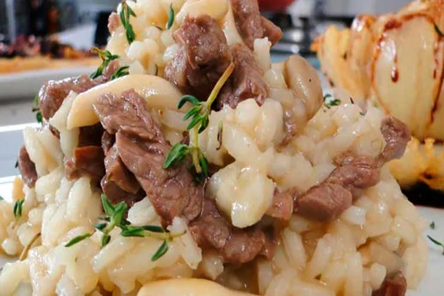
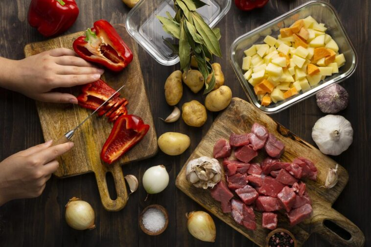
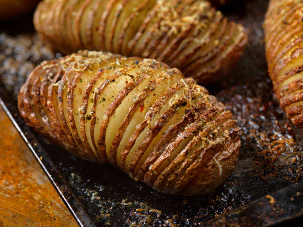

Risoto de filé-mignon
Cremoso, aromático e perfeito para uma refeição especial.
Cozinha simples, comida de verdade
Pratos salgados e doces explicados de forma direta, para cozinhar sem complicação.
Explorar receitas
Escolha seu próximo prato

Cremoso, aromático e perfeito para uma refeição especial.

Crocante por fora, macia por dentro e fácil de preparar.

Uma receita clássica para o café ou para a sobremesa.